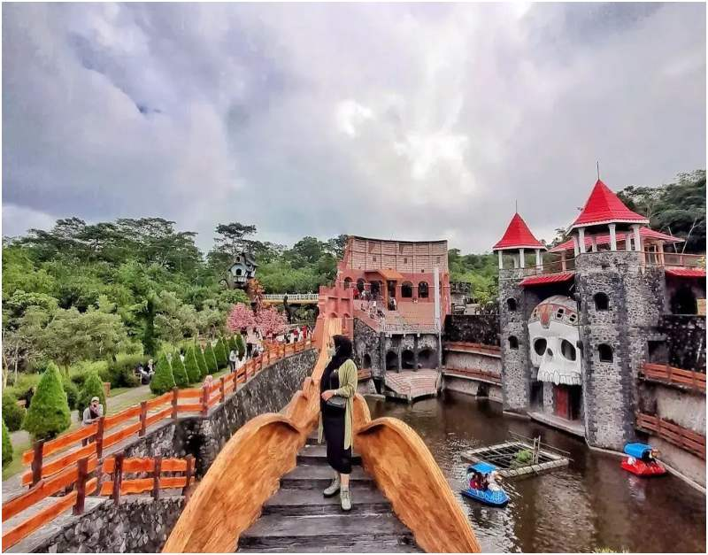
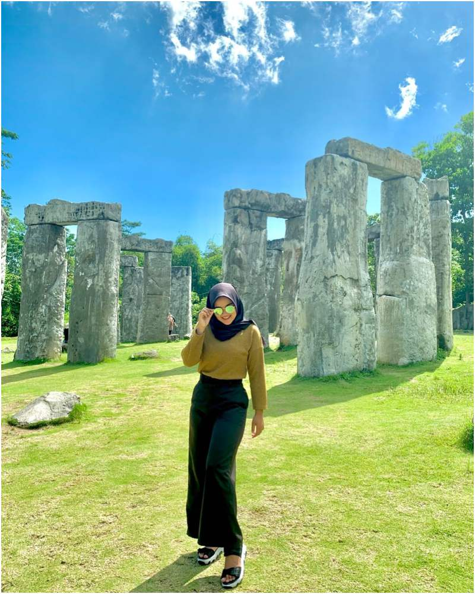
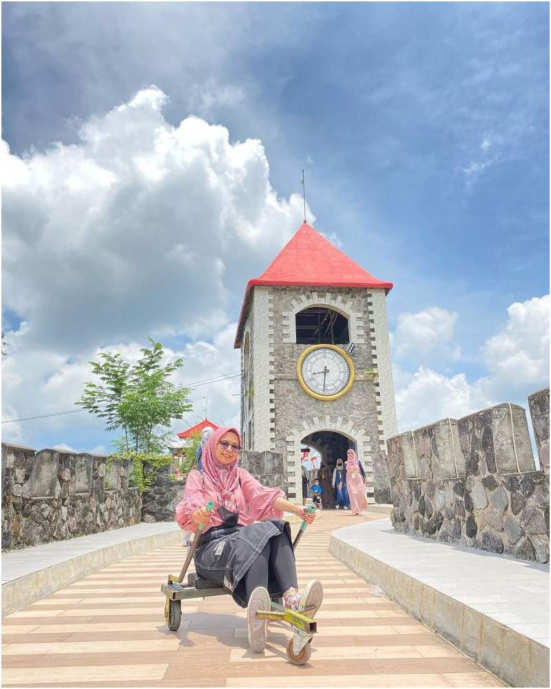
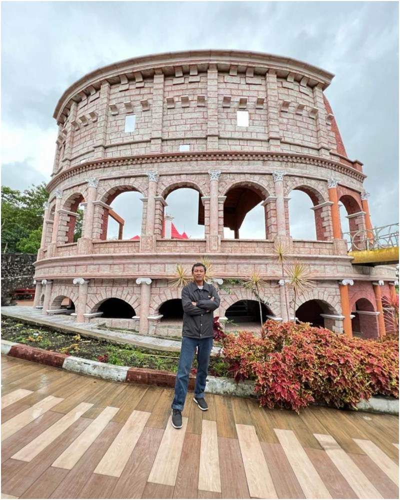
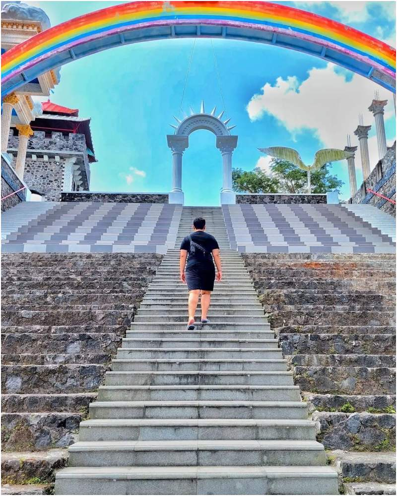

THE LOST WORLD CASTLE JOGJA, RUTE, TIKET MASUK DAN FASILITAS
The Lost World Castle Jogja menjadi salah satu tempat wisata populer di kawasan Daerah Istimewa Yogyakarta. Namun demikian, tak sedikit wisatawan luar kota, bahkan dalam kota Jogja yang belum tahu banyak hal mengenai destinasi wisata ngehits ini.
Banyak yang menyebut tempat wisata ini sebagai Benteng Takeshi, atau replika Tembok Besar China. Terlepas dari itu, banyak hal menarik yang bisa ditemui di tempat wisata ini.
1. Lokasi The Lost World Castle Jogja
Lokasi kawasan wisata ini berada di Kabupaten Sleman, daerah Istimewa Yogyakarta, tepatnya di Jl. Petung Merapi, Petung, Kepuharjo, Kec. Cangkringan, Kabupaten Sleman. Tidak sulit untuk sampai di tempat wisata ini karena ada banyak petunjuk jalan yang bisa diikuti. Untuk yang menggunakan kendaraan pribadi, kamu tinggal mengikuti google Maps.
Yang menarik, akses menuju The Lost World Castle Jogja sangat mudah dan bisa dilalui, mulai dari sepeda motor hingga bus besar. Jaraknya dari pusat kota Jogja juga relatif tidak jauh, sekitar 27 kilometer dengan lama perjalanan menggunakan kendaraan kurang lebih 45 menit.
Untuk mempermudah perjalanan, kamu bisa mengikuti petunjuk ini. Dengan titik start dari Bundaran UGM, kamu bisa langsung menuju ke utara menuju ke Jalan Kaliurang. Melewati perempatan Kentungan, lanjutkan perjalanan ke utara menyusuri Jalan Kaliurang hingga pertigaan sebelum Universitas Islam Indonesia. Di pertigaan tersebut, kamu harus belok kanan, melanjutkan perjalanan dan mengikuti jalan Cangkringan hingga menemukan pertigaan. Kamu harus belok kanan dan kembali melanjutkan perjalanan menuju Kantor Kepala Desa Wukirsari. Dari daerah ini, kamu bisa menemukan petunjuk ke The Lost World Castle Jogja dan tinggal mengikuti jalur yang sudah ditentukan untuk sampai ke lokasi.
2. Jam operasional
Kamu bisa menikmati semua atraksi wisata di kawasan ini sepanjang minggu, karena jam operasional ditetapkan setiap hari, dari Senin hingga Minggu, mulai pukul 7.00 hingga 18.00 WIB.
3. Harga tiket The Lost World Castle Jogja
Bagi yang penasaran dengan harga tiket The Lost World Castle, kamu bisa menyiapkan dana 30,000 IDR per orang. Dengan uang tersebut, kamu akan mendapatkan akses ke semua fasilitas yang berada di dalam tempat wisata keluarga ini, mulai dari spot berfoto, mushola, toilet.
Untuk informasi, harta tiket di atas tidak termasuk dalam biaya parkir dan konsumsi. Bagi yang membawa kendaraan, harus menyiapkan budget untuk parkir kendaraan. Untuk motor, pengelola menetapkan harga parkir 5,000 IDR, sementara untuk mobil ditetapkan harga parkir 10,000 IDR. Adapun yang datang dalam rombongan menggunakan bus setidaknya harus menyiapkan 25,000 IDR per kendaraan untuk ongkos parkir.
Adapun untuk wahana permainan di kawasan ini juga memiliki harga tiket tersendiri, mulai dari 10,000 IDR untuk kereta roda tiga atau gledekan.
4. Fasilitas yang tersedia
Tak perlu bingung kala liburan ke tempat wisata ini karena fasilitas yang dimiliki terbilang lengkap. Selain lahan parkir yang luas, The Lost World Castle juga menawarkan fasilitas mushola yang bersih, toilet dan juga tempat untuk mendapatkan souvenir.
Selain itu, kamu juga bisa menemukan tempat makan dan bersantai di kawasan ini. Menunya juga variatif dengan harga yang ramah di kantong, mulai dari 5,000 IDR.
5. Atraksi wisata yang ditawarkan
Selain menggunakan "gledekan" yang sudah disebutkan di atas, ada banyak wahana menarik yang layak dikunjungi, tak terkecuali bebek kayuh dan sampan. Ada juga beberapa spot foto asyik yang bisa dijadikan latar belakang untuk berfoto kamu, seperti gambar sayap yang panjang dan lebar, tangga menuju langit, lukisan 3D dengan permadani terbang, air tejun serta jembatan dan masih banyak lagi yang tak kalah menarik lainnya.
Kamu juga bisa menyusuri Tembok Besar Cina dengan berjalan kaki atau menggunakan “gledekan”. Berfoto dengan latar Stonehange, Taman Sakura, Perkampungan Indian dan Rumah Hobbit juga bisa kamu jumpai di sini. Ada juga kapal bajak laut dengan peti harta karun di dalamnya yang tidak boleh kamu lewatkan. Gunung Merapi juga menjadi pemandangan yang asyik untuk dinikmati dari tempat ini.